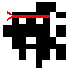

Ryan Maglio.la
Game Programmer and Designer
Greatest City - 15 weeks
2016
PC
In a far off land, a boy named Sully has a dream: Create the greatest city of all time. Control Sully as he explores an infinite, randomly generated world, collecting resources and recruiting villagers to help him on his journey.
For this game, I developed the interface for saving and loading assets as text files. Additionally, I wrote the character controller with its freely rotatable camera. The world's infinite terrain generation was a struggle, but I was able to isolate blocks of code into coroutines which greatly improved the game's performance.
Chroma Cannon Anthology
2012-2016 - ongoing
PC, Android, Nintendo 3DS
Chroma Cannon is basic in design; you, the player, move around the field of play in an endurance test to survive as long as possible. Each of the games supported platforms and versions utilize slightly different mechanics to take advantage of the technology that was available to me.
Chroma Cannon II - Play (Android)
Going Rogue
2016 - 5 weeks
PC
The most ambitious game yet, Gone Rogue is a fully random rogue like dungeon crawling game featuring three different themes for floors, each with their own unique boss. For this project, I handled all of the game’s random dungeon generation code, which was a lot of fun to write. On top of that, I also coded the level one and three (electric and fire) boss AI.

Isotopolis
2016 - ongoing
PC,Web,Android,iOS
Isotopolis is an exploratory game about the process of discovering rare isotopes. I aided in the development of the tutorial level for this game, as well as a whole host of other features and bug fixes including text to speech isotope names.

Cave Game
2015 - 1 week
PC, Web
Cave Game was the first scrollable 2D game I've made, as well as the first game where I experiemented with random level generation. The player's goal is to collect a specified amount of fuel for their mining drill that is randomly scattered about the world. Platforms are generated in chunks on the fly when they are nearby offscreen. Each chunk remains in memory, so platform locations remain constant during the player's run.
Maze Training
2016 - 2 months
PC
Brain Powered Games, Maze Training, is a game designed to stimulate brain activity and growth through memory and repetition. For this game, I developed and wrote a random maze generator that the player would navigate in memory activities.
Drosera
2016 - 5 weeks
PC, Android
Drosera is a tile based tower defense game built for PC and Android featuring a unique powerup and energy system to sustain your towers. For this game I wrote the main backend that made the whole game come together. This includes the tile based nature of the game, as well as writing a custom level importer that allowed designers to easily write waves of enemies without ever touching a single piece of code.

Yozakura
2016 - 5 Weeks
PC
Yozakura was a group project based on a prototype I had built hours prior. This game features a unique 2D locked side scrolling platformer in a 3D environment. The twist is that the 2D lock can shift in increments in the Z-Axis. While layer shifting, the player can only see one layer adjacent to them, which results in a unique puzzle environment that tests wit, skill, and memory. I wrote all of the code for this project.
Kart Racing Game
2015 - 5 weeks
PC
This game plays as a standard racing game with 2-Player and Time Trial Modes. As the main programmer in the team, I wrote the mechanics that drove the AI, the scripts that ensure you traversed the entire track length, cut scene code, multiplayer code, and more. The project itself looks a little rough around the edges, but the game's backbone is fully functional and could potentially be used in the future.